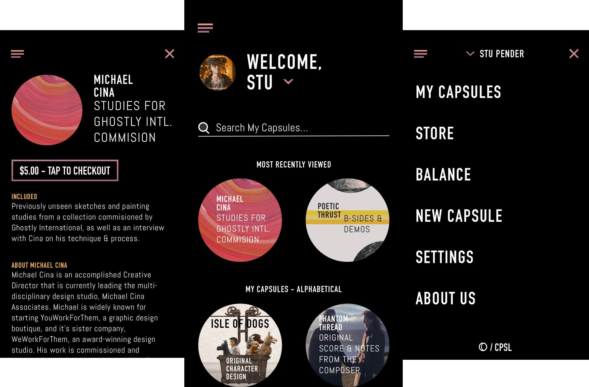
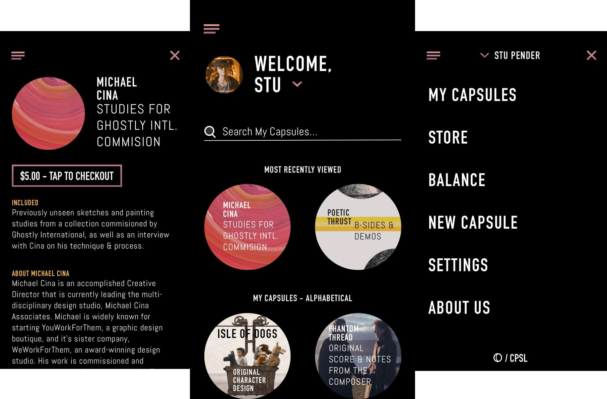

Capsule is an app for artists to sell and share exclusive content. My role in this project was visual branding, research, sound design, and prototyping.
View clickable prototypeTHE PROBLEM
Capsule's idea came about during a brainstorming session between musicians, including myself. Our goal was to discuss new ways that an artist could monetize themselves and their content. The current landscape of music streaming removes any substantial revenue that an artist would have made through record sales. This requires us to look elsewhere.
PERSONAS
In our brainstorming, we realized the amount of excess content we all held on to was quite high. Insights into the creative process for example often didn't reach an audience. We no longer use record sleeves. It could be as simple as sharing demos that never made the album, or recordings of a live show. I extended the reach to my friends in the larger art community. Film makers, hobbyist photographers, beat-makers, painters, and fashion designers. There are steps along the way to creating a finished piece that create the world which your art exists. Generally, consumers only see the finished product. This might be content that a fan would be willing to pay extra money for. These conversations molded the personas for which I would design Capsule.
RESEARCH
When deciding on the platform for Capsule, I conducted user surveys and looked to current market trends. Some highlights from these user research surveys are shown below.
90%
of artists profit less from their content due to streaming.
75%
of users now share content directly from a mobile device.
60%
of users feel that current media sharing websites hold too much control over their presentation.
It is clear that the world is lunging in the direction of touch-based mobile devices and apps. Being encapsulated as an app best captures the feeling that I envisioned for Capsule. Artists need a new platform to market and sell their content that is integrated with the digital age. Capsule positions itself as a forward-thinking product in this evolving market. I sketched out my initial ideas for the concept which were then developed into a full prototype.
 

FEATURES & FUNCTION
Artists who I interviewed had much to say about sharing content in the digital era. I often heard that they wanted more control over the presentation of the content. Some services such as Bandcamp allow this, while others such as Instagram and Facebook will apply your content to a pre-build template. Without web development skills, some artists feel constrained by current services. The content became my guide. Capsule is designed in way which allows the artist to stay true to their vision. It pairs the artist with a hired designer. They will collaborate to create a beautiful page for the artist's content. The designer then receives a percentage of the payments made for the Capsule.
IDENTITY
I strove to create a neutral design that would allow content to be the focus of the user experience. Bold typefaces and colors convey movement through a process or action. User testing in early prototypes helped refine processes such as onboarding. Users focused more when viewing one task at a time. If this was the case though, they wanted to be able to scroll back and forth between tasks. I added navigation buttons including arrows and a center button that fills in when a task is complete. A progress bar and save-warning messages are included to aid in user confidence.
View Capsule's branding moodboardSOUND DESIGN
For Capsule's sound I wanted to first create a signature tone. I began with field recordings that I collected from hiking trips in Palos Verdes and Joshua Tree. These held a sense of wonder and possibility to me. I combined them with a single piano tone that signified a clear beginning. The combination of these sounds became the Capsule starting tone.
I paired this with shorter sounds on a synthesized piano for two basic notification functions. The first uses a major third with a quick attack. This sound is designed to be an unobtrusive confirmation for successfully purchasing or creating a Capsule. The second sound uses a dissonant major second combined with a sharp metallic percussive element. This is a warning tone to help the user from closing a window without first saving their progress.
WHAT I'VE LEARNED
Future uses for Capsule are wide reaching. It could remain as a app for exclusive content only. It could expand into a primary service by which artists sell their actual works of art. It is up to artists to create and to whether the market finds value in this. Capsule opens a new door to empower the arts in the digital era.